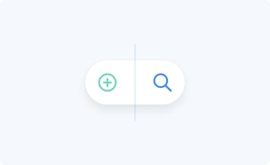
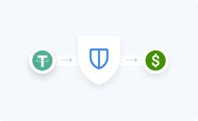
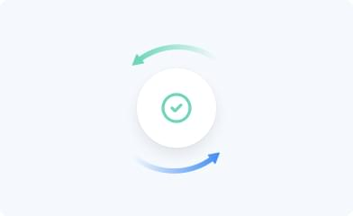

<!DOCTYPE html><html lang="en"><head><meta charset="UTF-8"><meta http-equiv="X-UA-Compatible" content="IE=edge"><meta name="viewport" content="width=device-width,initial-scale=1"><link rel="stylesheet" href="./css/normalize.css"><link rel="stylesheet" href="./css/main.css"><script defer="defer" src="https://code.jquery.com/jquery-3.6.0.js"></script><script defer="defer" src="https://code.jquery.com/ui/1.13.2/jquery-ui.js"></script><script defer="defer" src="./js/app.js"></script><title>DePO</title></head><body><!-- ?xml version="1.0" encoding="utf-8"?--></body></html><svg viewBox="0 0 40 40" xmlns="http://www.w3.org/2000/svg" xmlns:xlink="http://www.w3.org/1999/xlink" style="display: none"><style>:root>svg{display:none}:root>svg:target{display:block}</style><svg id="Caret_Down" fill="none" viewBox="0 0 24 24" xmlns="http://www.w3.org/2000/svg"><path d="m15 11-3 3-3-3" stroke-width="2" stroke-linecap="round" stroke-linejoin="round"></path></svg> <svg id="ClipboardText" fill="none" viewBox="0 0 24 24" xmlns="http://www.w3.org/2000/svg"><path d="M15.75 2.25h-7.5V6h7.5V2.25Z" stroke="#6F767E" stroke-width="1.5" stroke-linecap="round" stroke-linejoin="round"></path><path d="M15.75 3.75h3a.75.75 0 0 1 .75.75v15.75a.75.75 0 0 1-.75.75H5.25a.75.75 0 0 1-.75-.75V4.5a.75.75 0 0 1 .75-.75h3M9 14.25h6M9 11.25h6" stroke="#6F767E" stroke-width="1.5" stroke-linecap="round" stroke-linejoin="round"></path></svg> <svg id="arrow-round" fill="none" viewBox="0 0 24 24" xmlns="http://www.w3.org/2000/svg"><circle cx="12" cy="12" r="12" fill="#fff"></circle><path d="M15.445 9.434 12 12.879 8.555 9.434 7.5 10.488l4.5 4.5 4.5-4.5-1.055-1.054Z" fill="#000"></path></svg> <svg id="by" fill="none" viewBox="0 0 21 20" xmlns="http://www.w3.org/2000/svg"><g clip-path="url(#da)"><path d="M10.496 20c5.523 0 10-4.477 10-10s-4.477-10-10-10-10 4.477-10 10 4.477 10 10 10Z" fill="#FCFCFC"></path><path d="M4.627 9.275 3.54 7.303l1.087-1.94 1.087 1.94-1.087 1.972ZM2.453 9.275 1.366 7.303l1.087-1.94 1.087 1.94-1.087 1.972ZM4.627 14.638 3.54 12.666l1.087-1.941 1.087 1.94-1.087 1.973ZM2.453 14.638l-1.087-1.972 1.087-1.941 1.087 1.94-1.087 1.973ZM5.714 1.941l-.308-.55c-.552.328-1.07.706-1.547 1.13l.768 1.392 1.087-1.972ZM4.627 16.087l-.776 1.385c.477.424.994.803 1.546 1.131l.317-.575-1.087-1.941Z" fill="#A2001D"></path><path d="M6.583 12.609v6.596a10.003 10.003 0 0 0 13.291-5.727l-13.29-.87Z" fill="#6DA544"></path><path d="M19.874 13.478A9.977 9.977 0 0 0 20.496 10c0-5.523-4.477-10-10-10a9.969 9.969 0 0 0-3.913.795v12.683h13.291Z" fill="#A2001D"></path></g><defs><clippath id="da"><path fill="#fff" transform="translate(.496)" d="M0 0h20v20H0z"></path></clippath></defs></svg> <svg id="fb" viewBox="0 0 40 40" xmlns="http://www.w3.org/2000/svg"><circle cx="20" cy="20" r="20"></circle><g clip-path="url(#ea)"><path fill="currentColor" d="M28 20a8 8 0 1 0-9.25 7.903v-5.59h-2.031V20h2.031v-1.762c0-2.005 1.194-3.113 3.022-3.113.875 0 1.79.156 1.79.156v1.969h-1.008c-.994 0-1.304.617-1.304 1.25V20h2.219l-.355 2.313H21.25v5.59A8.002 8.002 0 0 0 28 20Z"></path></g><defs><clippath id="ea"><path transform="translate(12 12)" d="M0 0h16v16H0z"></path></clippath></defs></svg> <svg id="done" fill="none" viewBox="0 0 120 120" xmlns="http://www.w3.org/2000/svg"><g filter="url(#ea)"></g><rect x="16" y="8" width="88" height="88" rx="44" fill="#fff"></rect><path d="M60 67c8.284 0 15-6.716 15-15 0-8.284-6.716-15-15-15-8.284 0-15 6.716-15 15 0 8.284 6.716 15 15 15Z" stroke="#6FD6BD" stroke-width="3.333" stroke-miterlimit="10" stroke-linecap="round" stroke-linejoin="round"></path><path d="m65 48.667-6.667 6.666L55 52" stroke="#6FD6BD" stroke-width="3.333" stroke-linecap="round" stroke-linejoin="round"></path><defs></defs><filter id="ea" x="0" y="0" width="120" height="120" filterUnits="userSpaceOnUse" color-interpolation-filters="sRGB"><feflood flood-opacity="0" result="BackgroundImageFix"></feflood><fecolormatrix in="SourceAlpha" values="0 0 0 0 0 0 0 0 0 0 0 0 0 0 0 0 0 0 127 0" result="hardAlpha"></fecolormatrix><feoffset dy="8"></feoffset><fegaussianblur stdDeviation="8"></fegaussianblur><fecolormatrix values="0 0 0 0 0 0 0 0 0 0 0 0 0 0 0 0 0 0 0.08 0"></fecolormatrix><feblend in2="BackgroundImageFix" result="effect1_dropShadow_128_2866"></feblend><fecolormatrix in="SourceAlpha" values="0 0 0 0 0 0 0 0 0 0 0 0 0 0 0 0 0 0 127 0" result="hardAlpha"></fecolormatrix><feoffset></feoffset><fegaussianblur stdDeviation="2"></fegaussianblur><fecolormatrix values="0 0 0 0 0 0 0 0 0 0 0 0 0 0 0 0 0 0 0.04 0"></fecolormatrix><feblend in2="effect1_dropShadow_128_2866" result="effect2_dropShadow_128_2866"></feblend><feblend in="SourceGraphic" in2="effect2_dropShadow_128_2866" result="shape"></feblend></filter></svg> <svg id="insta" viewBox="0 0 40 40" xmlns="http://www.w3.org/2000/svg"><circle cx="20" cy="20" r="20"></circle><g clip-path="url(#fa)" fill="currentColor"><path d="M20 13.44c2.137 0 2.39.01 3.231.048.781.034 1.203.165 1.485.274.371.144.64.32.918.597.282.282.453.547.597.92.11.28.24.705.275 1.483.038.844.047 1.097.047 3.232 0 2.137-.01 2.39-.047 3.231-.034.781-.165 1.203-.275 1.484-.144.372-.319.641-.597.92a2.46 2.46 0 0 1-.918.596c-.282.11-.707.24-1.485.275-.844.038-1.097.047-3.231.047-2.137 0-2.39-.01-3.231-.047-.781-.034-1.203-.166-1.485-.275a2.473 2.473 0 0 1-.918-.597 2.46 2.46 0 0 1-.597-.919c-.11-.28-.24-.706-.275-1.484-.038-.844-.047-1.097-.047-3.231 0-2.138.01-2.39.047-3.232.034-.78.165-1.203.275-1.484.143-.372.319-.64.597-.919.28-.28.546-.453.918-.597.282-.109.707-.24 1.485-.274.84-.038 1.094-.047 3.231-.047ZM20 12c-2.172 0-2.444.01-3.297.047-.85.037-1.434.175-1.94.372a3.905 3.905 0 0 0-1.42.925c-.446.444-.718.89-.924 1.415-.197.51-.335 1.091-.372 1.941-.038.856-.047 1.128-.047 3.3 0 2.172.01 2.444.047 3.297.037.85.175 1.434.372 1.94.206.529.478.976.925 1.42.444.443.89.718 1.415.921.51.197 1.091.335 1.941.372.853.038 1.125.047 3.297.047s2.444-.01 3.297-.047c.85-.037 1.434-.175 1.94-.372a3.91 3.91 0 0 0 1.416-.922 3.91 3.91 0 0 0 .922-1.415c.197-.51.334-1.091.372-1.941.037-.853.047-1.125.047-3.297s-.01-2.444-.047-3.297c-.038-.85-.175-1.434-.372-1.94a3.748 3.748 0 0 0-.916-1.422 3.91 3.91 0 0 0-1.415-.922c-.51-.197-1.091-.335-1.941-.372-.856-.04-1.128-.05-3.3-.05Z"></path><path d="M20 15.89a4.11 4.11 0 0 0 0 8.22 4.11 4.11 0 0 0 0-8.22Zm0 6.776a2.666 2.666 0 1 1 0-5.332 2.666 2.666 0 0 1 0 5.332ZM25.231 15.728a.96.96 0 1 1-1.919 0 .96.96 0 0 1 1.92 0Z"></path></g><defs><clippath id="fa"><path transform="translate(12 12)" d="M0 0h16v16H0z"></path></clippath></defs></svg> <svg id="kz" fill="none" viewBox="0 0 21 20" xmlns="http://www.w3.org/2000/svg"><g clip-path="url(#ga)"><path d="M10.496 20c5.523 0 10-4.477 10-10s-4.477-10-10-10-10 4.477-10 10 4.477 10 10 10Z" fill="#338AF3"></path><path d="M16.148 10.109H4.844c0 .78.68 1.413 1.46 1.413h-.047c0 .78.633 1.413 1.413 1.413 0 .78.633 1.413 1.413 1.413h2.826c.78 0 1.413-.633 1.413-1.413.78 0 1.413-.633 1.413-1.413h-.047c.78 0 1.46-.633 1.46-1.413Z" fill="#FFDA44"></path><path d="M14.41 8.26a3.913 3.913 0 0 1-7.827 0" fill="#338AF3"></path><path d="m13.485 8.26-1.221.575.65 1.183-1.326-.254-.168 1.34-.924-.985-.924.985-.168-1.34-1.326.254.65-1.183-1.22-.574 1.22-.575-.65-1.182 1.326.253.168-1.34.924.986.924-.985.168 1.34 1.326-.254-.65 1.182 1.221.575Z" fill="#FFDA44"></path></g><defs><clippath id="ga"><path fill="#fff" transform="translate(.496)" d="M0 0h20v20H0z"></path></clippath></defs></svg> <svg id="ru" fill="none" viewBox="0 0 20 20" xmlns="http://www.w3.org/2000/svg"><g clip-path="url(#ha)"><path d="M10 20c5.523 0 10-4.477 10-10S15.523 0 10 0 0 4.477 0 10s4.477 10 10 10Z" fill="#F0F0F0"></path><path d="M19.378 13.478A9.977 9.977 0 0 0 20 10c0-1.223-.22-2.395-.622-3.478H.622A9.979 9.979 0 0 0 0 10c0 1.223.22 2.395.622 3.478l9.378.87 9.378-.87Z" fill="#0052B4"></path><path d="M10 20c4.3 0 7.965-2.714 9.378-6.522H.622A10.004 10.004 0 0 0 10 20Z" fill="#D80027"></path></g><defs><clippath id="ha"><path fill="#fff" d="M0 0h20v20H0z"></path></clippath></defs></svg> <svg id="tr" fill="none" viewBox="0 0 21 20" xmlns="http://www.w3.org/2000/svg"><g clip-path="url(#ia)"><path d="M10.496 20c5.523 0 10-4.477 10-10s-4.477-10-10-10-10 4.477-10 10 4.477 10 10 10Z" fill="#D80027"></path><path d="m10.087 8.171.82 1.131 1.329-.43L11.414 10l.82 1.13-1.328-.432-.822 1.13.001-1.397-1.328-.433 1.329-.43V8.17Z" fill="#F0F0F0"></path><path d="M7.847 12.826a2.826 2.826 0 1 1 1.345-5.312 3.478 3.478 0 1 0 0 4.973c-.4.216-.858.34-1.345.34Z" fill="#F0F0F0"></path></g><defs><clippath id="ia"><path fill="#fff" transform="translate(.496)" d="M0 0h20v20H0z"></path></clippath></defs></svg> <svg id="tw" viewBox="0 0 40 40" xmlns="http://www.w3.org/2000/svg"><circle cx="20" cy="20" r="20"></circle><g clip-path="url(#ja)"><path d="M17.033 26.5c6.037 0 9.34-5.002 9.34-9.339 0-.14-.004-.284-.01-.425a6.666 6.666 0 0 0 1.637-1.7 6.473 6.473 0 0 1-1.884.517 3.3 3.3 0 0 0 1.443-1.816 6.6 6.6 0 0 1-2.083.797 3.287 3.287 0 0 0-5.596 2.993 9.324 9.324 0 0 1-6.765-3.427 3.286 3.286 0 0 0 1.016 4.38 3.287 3.287 0 0 1-1.487-.41v.041a3.281 3.281 0 0 0 2.633 3.219c-.482.132-.989.151-1.48.056a3.29 3.29 0 0 0 3.065 2.282A6.584 6.584 0 0 1 12 25.026a9.312 9.312 0 0 0 5.033 1.474Z" fill="currentColor"></path></g><defs><clippath id="ja"><path transform="translate(12 12)" d="M0 0h16v16H0z"></path></clippath></defs></svg> <svg id="ua" fill="none" viewBox="0 0 21 20" xmlns="http://www.w3.org/2000/svg"><g clip-path="url(#ka)"><path d="M10.496 20c5.523 0 10-4.477 10-10s-4.477-10-10-10-10 4.477-10 10 4.477 10 10 10Z" fill="#FFDA44"></path><path d="M.496 10c0-5.523 4.477-10 10-10s10 4.477 10 10" fill="#338AF3"></path></g><defs><clippath id="ka"><path fill="#fff" transform="translate(.496)" d="M0 0h20v20H0z"></path><header class="header"><div class="header__container"><div class="header__left"><a class="header__logo" href="#"></a><div class="header__overlay overlay"><div class="header__menu menu"><div class="header__burger menu__burger burger"><span class="burger__line"></span><span class="burger__line"> </span><span class="burger__line"></span></div><nav class="header__nav nav"><ul class="nav__list list-reset"><li class="nav__item descr"><a class="nav__link" href="#about">О нас</a></li><li class="nav__item descr"><a class="nav__link" href="#stages">Как это работает</a></li><li class="nav__item descr"><a class="nav__link" href="#geo">Где работаем</a></li><li class="nav__item descr"><a class="nav__link" href="#faq">FAQ</a></li><li class="nav__item descr"><a class="nav__link" href="#contacts">Контакты</a></li></ul></nav><div class="menu__lang"><p class="menu__lang-title">Выберите язык</p><ul class="menu__lang-list list-reset"><li class="menu__lang-item menu__lang-item--active"><svg class="menu__lang-icon"><use xlink:href="#ru"></use></svg><span class="menu__lang-value">Русский</span></li><li class="menu__lang-item"><svg class="menu__lang-icon"><use xlink:href="#ua"></use></svg><span class="menu__lang-value">English</span></li></ul></div></div></div></div><div class="header__right"><div class="header__lang lang"><div class="lang__selected"><svg class="lang__icon"><use xlink:href="#ru"></use></svg><span class="lang__value">Русский</span> <svg class="lang__arrow"><use xlink:href="#Caret_Down"></use></svg></div><div class="lang__options lang-options"><ul class="lang-options__list list-reset"><li class="lang-options__item lang-options__item--active"><svg class="lang-options__icon"><use xlink:href="#ru"></use></svg><span class="lang-options__value">Русский</span></li><li class="lang-options__item"><svg class="lang-options__icon"><use xlink:href="#ua"></use></svg><span class="lang-options__value">English</span></li></ul></div></div><button class="header__btn btn btn-reset">Launch app</button><div class="header__burger burger-common burger"><span class="burger__line"></span><span class="burger__line"> </span><span class="burger__line"></span></div></div></div></header><main class="main"><section class="hero"><div class="hero__container"><div class="hero__content"><h1 class="hero__title">Обменивай крипту и&nbsp;фиат без ограничений</h1><button class="hero__btn btn btn-reset">Launch app</button><div class="hero__descr hero-descr descr"><svg class="hero-descr__icon"><use xlink:href="#ClipboardText"></use></svg><span class="hero-descr__text">Работает на&nbsp;смарт-контрактах</span></div></div><div class="hero__bottom"><div class="hero__scroll hero-scroll"><svg class="hero-scroll__icon"><use xlink:href="#arrow-round"></use></svg><span class="hero-scroll__descr descr-sm">Листайте вниз</span></div><div class="hero__social social"><span class="social__descr descr-sm">Наши социальные сети</span><ul class="social__list list-reset"><li class="social__item"><a class="social__link" href="#"><svg class="social__icon"><use xlink:href="#fb"></use></svg></a></li><li class="social__item"><a class="social__link" href="#"><svg class="social__icon"><use xlink:href="#tw"></use></svg></a></li><li class="social__item"><a class="social__link" href="#"><svg class="social__icon"><use xlink:href="#insta"></use></svg></a></li></ul></div></div></div><div class="hero__overlay overlay"><div class="hero__popup hero-popup popup"><button class="hero-popup__closebtn popup__closebtn popup-closebtn btn-reset"><div class="popup-closebtn__wrapper"><span class="popup-closebtn__line"></span><span class="popup-closebtn__line"></span></div></button><h3 class="hero-popup__title popup__title">Заголовок попапа</h3><p class="hero-popup__descr popup__descr">Широкий спектр услуг по&nbsp;торговле и&nbsp;управлению цифровыми активами для удовлетворения разнообразных торговых потребностей.</p><button class="hero-popup__btn popup__btn btn btn-reset">Button</button></div></div></section><section class="about section-offset section-divider" id="about"><div class="container about__container"><div class="about__content"><h2 class="about__title title">Ведущая платформа для торговли цифровыми активами</h2><p class="about__descr">Широкий спектр услуг по&nbsp;торговле и&nbsp;управлению цифровыми активами для удовлетворения разнообразных торговых потребностей. Всесторонняя защита пользовательских активов с&nbsp;нашим автономным хранилищем, многофакторным шифрованием и&nbsp;круглосуточным мониторингом безопасности.</p></div></div></section><section class="stages section-offset section-divider" id="stages"><div class="container stages__container"><div class="stages__top"><h2 class="stages__title title">Совершите обмен за&nbsp;3&nbsp;шага</h2><button class="stages__btn btn btn-reset">Начать обмен</button></div><div class="stages__bottom"><ul class="stages__list list-reset"><li class="stages__item stages-item"><picture class="gallery__img-wrapper"><source srcset="../img/step-1.jpg" media="(max-width: 320px)"><source srcset="../img/step-1_2x.jpg" media="(max-width: 576px)"></picture><span class="stages-item__number descr stages-item__number-1">Шаг 1</span><h3 class="stages-item__title">Создай или найди сделку</h3><p class="stages-item__descr descr">Широкий спектр услуг по торговле и управлению цифровыми активами для удовлетворения</p></li><li class="stages__item stages-item"><picture class="gallery__img-wrapper"><source srcset="../img/step-2.jpg" media="(max-width: 320px)"><source srcset="../img/step-2_2x.jpg" media="(max-width: 576px)"></picture><span class="stages-item__number descr stages-item__number-2">Шаг 2</span><h3 class="stages-item__title">Безопасно переведи средства</h3><p class="stages-item__descr descr">Широкий спектр услуг по торговле и управлению цифровыми активами для удовлетворения</p></li><li class="stages__item stages-item"><picture class="gallery__img-wrapper"><source srcset="../img/step-3.jpg" media="(max-width: 320px)"><source srcset="../img/step-3_2x.jpg" media="(max-width: 576px)"></picture><span class="stages-item__number descr stages-item__number-3">Шаг 3</span><h3 class="stages-item__title">Заверши обмен</h3><p class="stages-item__descr descr">Широкий спектр услуг по торговле и управлению цифровыми активами для удовлетворения</p></li></ul><button class="stages__btn stages__bottom-btn btn btn-reset">Начать обмен</button></div></div></section><section class="geo section-offset section-divider" id="geo"><div class="container geo__container"><div class="geo__bg"></div><div class="geo__countries countries"><ul class="countries__list list-reset"><li class="countries__item" data-path="ru"><svg class="countries__icon"><use xlink:href="#ru"></use></svg><span class="countries__name descr">Россия</span></li><li class="countries__item" data-path="ua"><svg class="countries__icon"><use xlink:href="#ua"></use></svg><span class="countries__name descr">Украина</span></li><li class="countries__item" data-path="tr"><svg class="countries__icon"><use xlink:href="#tr"></use></svg><span class="countries__name descr">Турция</span></li><li class="countries__item" data-path="kz"><svg class="countries__icon"><use xlink:href="#kz"></use></svg><span class="countries__name descr">Казахстан</span></li><li class="countries__item" data-path="by"><svg class="countries__icon"><use xlink:href="#by"></use></svg><span class="countries__name descr">Беларусь</span></li></ul></div><div class="geo__wrapper"><h2 class="geo__title title">Страны, с&nbsp;которыми уже работает сервис</h2><div class="geo__btns"><button class="geo__btn geo__btn-launch btn btn-reset">Launch app</button> <button class="geo__btn geo__btn-connect btn btn-reset">Подключить мою страну</button></div></div></div><div class="geo__overlay overlay overlay--active"><div class="geo__popup geo__popup-1 geo-popup popup"><button class="geo-popup__closebtn popup__closebtn popup-closebtn btn-reset"><div class="popup-closebtn__wrapper"><span class="popup-closebtn__line"></span><span class="popup-closebtn__line"></span></div></button><h3 class="geo-popup__title popup__title">Подключить мою страну</h3><form class="geo-popup__form popup__form form" action=""><p class="form__label">Выберите страну</p><select class="form__select" placeholder="Выберите страну"><option class="form__option" value="value1">Выберите страну</option><option class="form__option" value="value2">Армения</option><option class="form__option" value="value3">Босния и Герцеговина</option><option class="form__option" value="value4">Израиль</option><option class="form__option" value="value5">Сьерра-Леоне</option></select><p class="form__label">Имя</p><input class="form__input" type="text" placeholder="Напишите свое имя"><p class="form__label">Email</p><input class="form__input" type="email" placeholder="Напишите свой email"> <button class="geo-popup__btn popup__btn btn btn-reset">Отправить заявку</button></form></div><div class="geo__popup geo__popup-2 geo-popup popup"><button class="geo-popup__closebtn popup__closebtn popup-closebtn btn-reset"><div class="popup-closebtn__wrapper"><span class="popup-closebtn__line"></span><span class="popup-closebtn__line"></span></div></button> <svg class="geo-popup__icon" width="120" height="120" viewBox="0 0 120 120" fill="none" xmlns="http://www.w3.org/2000/svg"><g filter="url(#filter0_dd_128_2866)"><rect x="16" y="8" width="88" height="88" rx="44" fill="white"></rect></g><path d="M60 67C68.2843 67 75 60.2843 75 52C75 43.7157 68.2843 37 60 37C51.7157 37 45 43.7157 45 52C45 60.2843 51.7157 67 60 67Z" stroke="#6FD6BD" stroke-width="3.33333" stroke-miterlimit="10" stroke-linecap="round" stroke-linejoin="round"></path><path d="M65 48.6667L58.3333 55.3334L55 52.0001" stroke="#6FD6BD" stroke-width="3.33333" stroke-linecap="round" stroke-linejoin="round"></path><defs><filter id="filter0_dd_128_2866" x="0" y="0" width="120" height="120" filterUnits="userSpaceOnUse" color-interpolation-filters="sRGB"></filter><feflood flood-opacity="0" result="BackgroundImageFix"></feflood><fecolormatrix in="SourceAlpha" type="matrix" values="0 0 0 0 0 0 0 0 0 0 0 0 0 0 0 0 0 0 127 0" result="hardAlpha"></fecolormatrix><feoffset dy="8"></feoffset><fegaussianblur stdDeviation="8"></fegaussianblur><fecolormatrix type="matrix" values="0 0 0 0 0 0 0 0 0 0 0 0 0 0 0 0 0 0 0.08 0"></fecolormatrix><feblend mode="normal" in2="BackgroundImageFix" result="effect1_dropShadow_128_2866"></feblend><fecolormatrix in="SourceAlpha" type="matrix" values="0 0 0 0 0 0 0 0 0 0 0 0 0 0 0 0 0 0 127 0" result="hardAlpha"></fecolormatrix><feoffset></feoffset><fegaussianblur stdDeviation="2"></fegaussianblur><fecolormatrix type="matrix" values="0 0 0 0 0 0 0 0 0 0 0 0 0 0 0 0 0 0 0.04 0"></fecolormatrix><feblend mode="normal" in2="effect1_dropShadow_128_2866" result="effect2_dropShadow_128_2866"></feblend><feblend mode="normal" in="SourceGraphic" in2="effect2_dropShadow_128_2866" result="shape"></feblend></defs></svg><h3 class="geo-popup__title popup__title">Заявка отправлена</h3><p class="geo-popup__descr popup__descr">Мы&nbsp;отправим уведомление, когда обменные операции станут доступны в&nbsp;вашей стране</p><button class="geo-popup__btn popup__btn btn btn-reset">Понятно</button></div></div></section><section class="faq section-offset" id="faq"><div class="container faq__container"><div class="faq__content"><div class="faq__left"><div class="faq__title title">FAQ</div><p class="faq__descr descr">Найдите ответы, на&nbsp;интересующие вопросы</p></div><div class="faq__right"><div class="faq__accordion accordion"><ul class="accordion__list list-reset" id="accordion"><li class="accordion__item"><div class="accordion__head"><h3 class="accordion__title">How does staking work?</h3><div class="accordion__icon"><span class="accordion__line"></span><span class="accordion__line"></span></div></div><div class="accordion__content"><p>Staking is a method of verifying and securing transactions on proof of stake blockchains. It’s faster and more energy efficient than other methods such as proof of work. Plus, participants get rewarded for helping in the process. In exchange for delegating your crypto, you get rewarded with more assets from the network. To generate staking rewards on a Proof of Stake blockchain, a node has to designate a certain amount of tokens on the network as a stake (similar to a security deposit). The chance of that node being chosen to validate the next block is typically proportional to the number of tokens being staked. If the node successfully validates a block, it is awarded the staking reward, similar to a miner being rewarded in Proof of Work chains. Validators lose part of their stake if they approve a fraudulent transaction — this incentivizes them to only approve valid transactions.</p></div></li><li class="accordion__item"><div class="accordion__head"><h3 class="accordion__title">Which Proof of Stake asset(s) earn staking rewards?</h3><div class="accordion__icon"><span class="accordion__line"></span><span class="accordion__line"></span></div></div><div class="accordion__content"><p>Staking is a method of verifying and securing transactions on proof of stake blockchains. It’s faster and more energy efficient than other methods such as proof of work. Plus, participants get rewarded for helping in the process. In exchange for delegating your crypto, you get rewarded with more assets from the network. To generate staking rewards on a Proof of Stake blockchain, a node has to designate a certain amount of tokens on the network as a stake (similar to a security deposit). The chance of that node being chosen to validate the next block is typically proportional to the number of tokens being staked. If the node successfully validates a block, it is awarded the staking reward, similar to a miner being rewarded in Proof of Work chains. Validators lose part of their stake if they approve a fraudulent transaction — this incentivizes them to only approve valid transactions.</p></div></li><li class="accordion__item"><div class="accordion__head"><h3 class="accordion__title">Who is eligible to stake on DEPO?</h3><div class="accordion__icon"><span class="accordion__line"></span><span class="accordion__line"></span></div></div><div class="accordion__content"><p>Staking is a method of verifying and securing transactions on proof of stake blockchains. It’s faster and more energy efficient than other methods such as proof of work. Plus, participants get rewarded for helping in the process. In exchange for delegating your crypto, you get rewarded with more assets from the network. To generate staking rewards on a Proof of Stake blockchain, a node has to designate a certain amount of tokens on the network as a stake (similar to a security deposit). The chance of that node being chosen to validate the next block is typically proportional to the number of tokens being staked. If the node successfully validates a block, it is awarded the staking reward, similar to a miner being rewarded in Proof of Work chains. Validators lose part of their stake if they approve a fraudulent transaction — this incentivizes them to only approve valid transactions.</p></div></li><li class="accordion__item"><div class="accordion__head"><h3 class="accordion__title">How does ETH staking work?</h3><div class="accordion__icon"><span class="accordion__line"></span><span class="accordion__line"></span></div></div><div class="accordion__content"><p>Staking is a method of verifying and securing transactions on proof of stake blockchains. It’s faster and more energy efficient than other methods such as proof of work. Plus, participants get rewarded for helping in the process. In exchange for delegating your crypto, you get rewarded with more assets from the network. To generate staking rewards on a Proof of Stake blockchain, a node has to designate a certain amount of tokens on the network as a stake (similar to a security deposit). The chance of that node being chosen to validate the next block is typically proportional to the number of tokens being staked. If the node successfully validates a block, it is awarded the staking reward, similar to a miner being rewarded in Proof of Work chains. Validators lose part of their stake if they approve a fraudulent transaction — this incentivizes them to only approve valid transactions.</p></div></li><li class="accordion__item"><div class="accordion__head"><h3 class="accordion__title">What are the risks associated with staking?</h3><div class="accordion__icon"><span class="accordion__line"></span><span class="accordion__line"></span></div></div><div class="accordion__content"><p>Staking is a method of verifying and securing transactions on proof of stake blockchains. It’s faster and more energy efficient than other methods such as proof of work. Plus, participants get rewarded for helping in the process. In exchange for delegating your crypto, you get rewarded with more assets from the network. To generate staking rewards on a Proof of Stake blockchain, a node has to designate a certain amount of tokens on the network as a stake (similar to a security deposit). The chance of that node being chosen to validate the next block is typically proportional to the number of tokens being staked. If the node successfully validates a block, it is awarded the staking reward, similar to a miner being rewarded in Proof of Work chains. Validators lose part of their stake if they approve a fraudulent transaction — this incentivizes them to only approve valid transactions.</p></div></li><li class="accordion__item"><div class="accordion__head"><h3 class="accordion__title">How do I earn DeFi yield on DEPO?</h3><div class="accordion__icon"><span class="accordion__line"></span><span class="accordion__line"></span></div></div><div class="accordion__content"><p>Staking is a method of verifying and securing transactions on proof of stake blockchains. It’s faster and more energy efficient than other methods such as proof of work. Plus, participants get rewarded for helping in the process. In exchange for delegating your crypto, you get rewarded with more assets from the network. To generate staking rewards on a Proof of Stake blockchain, a node has to designate a certain amount of tokens on the network as a stake (similar to a security deposit). The chance of that node being chosen to validate the next block is typically proportional to the number of tokens being staked. If the node successfully validates a block, it is awarded the staking reward, similar to a miner being rewarded in Proof of Work chains. Validators lose part of their stake if they approve a fraudulent transaction — this incentivizes them to only approve valid transactions.</p></div></li><li class="accordion__item"><div class="accordion__head"><h3 class="accordion__title">What’s the difference between staking and DeFi yield?</h3><div class="accordion__icon"><span class="accordion__line"></span><span class="accordion__line"></span></div></div><div class="accordion__content"><p>Staking is a method of verifying and securing transactions on proof of stake blockchains. It’s faster and more energy efficient than other methods such as proof of work. Plus, participants get rewarded for helping in the process. In exchange for delegating your crypto, you get rewarded with more assets from the network. To generate staking rewards on a Proof of Stake blockchain, a node has to designate a certain amount of tokens on the network as a stake (similar to a security deposit). The chance of that node being chosen to validate the next block is typically proportional to the number of tokens being staked. If the node successfully validates a block, it is awarded the staking reward, similar to a miner being rewarded in Proof of Work chains. Validators lose part of their stake if they approve a fraudulent transaction — this incentivizes them to only approve valid transactions.</p></div></li></ul></div></div></div></div></section><section class="app" id="app"><div class="container app__container"><div class="app__content"><h2 class="app__title title">Обменяйте средства за&nbsp;считанные минуты</h2><p class="app__descr descr">Широкий спектр услуг по&nbsp;торговле и&nbsp;управлению цифровыми активами для удовлетворения разнообразных торговых потребностей</p><button class="app__btn btn btn-reset">Launch app</button></div><div class="app__bg"></div></div></section></main><footer class="footer"><div class="container footer__container"><div class="footer__left"><span class="footer__copy descr-sm">&copy;&nbsp;DEPO 2022</span></div><div class="footer__center"><a class="footer__link footer__terms descr-sm" href="#">Terms of Use</a><a class="footer__link footer__policy descr-sm" href="#">Privacy policy</a></div><div class="footer__right footer__social footer-social"><p class="footer-social__descr descr-sm">Наши социальные сети</p><ul class="social__list list-reset"><li class="social__item"><a class="social__link" href="#"><svg class="footer-social__icon social__icon"><use xlink:href="#fb"></use></svg></a></li><li class="social__item"><a class="social__link" href="#"><svg class="footer-social__icon social__icon"><use xlink:href="#tw"></use></svg></a></li><li class="social__item"><a class="social__link" href="#"><svg class="footer-social__icon social__icon"><use xlink:href="#insta"></use></svg></a></li></ul></div></div></footer></clippath></defs></svg></svg>